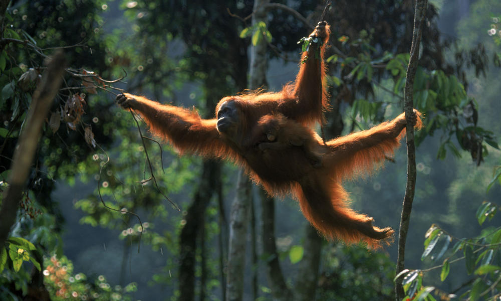
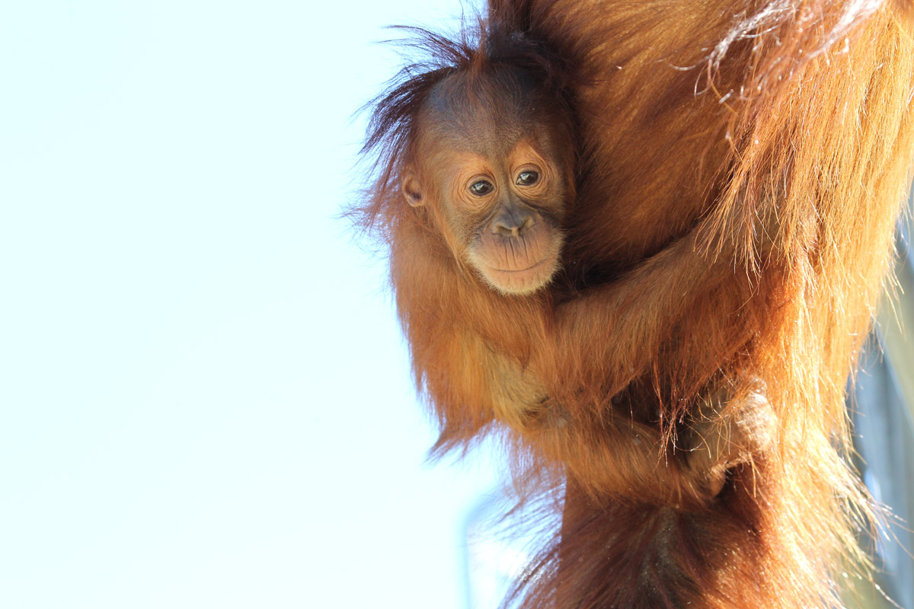
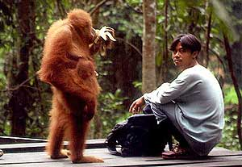
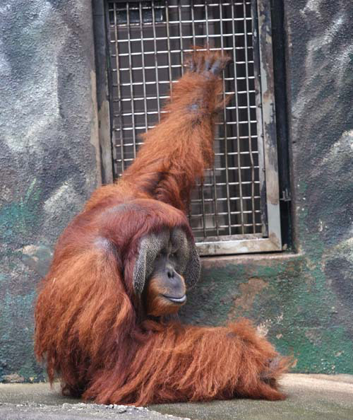
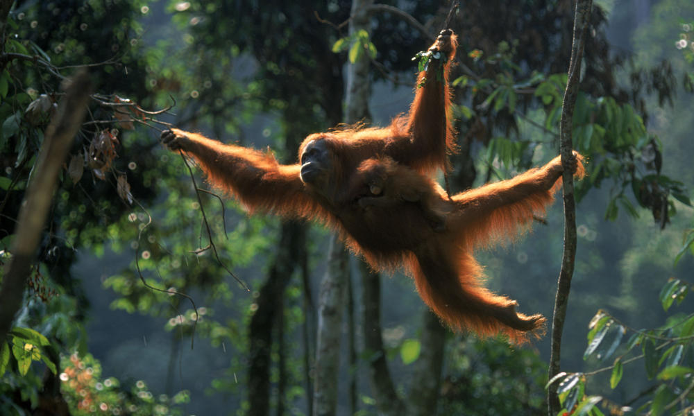
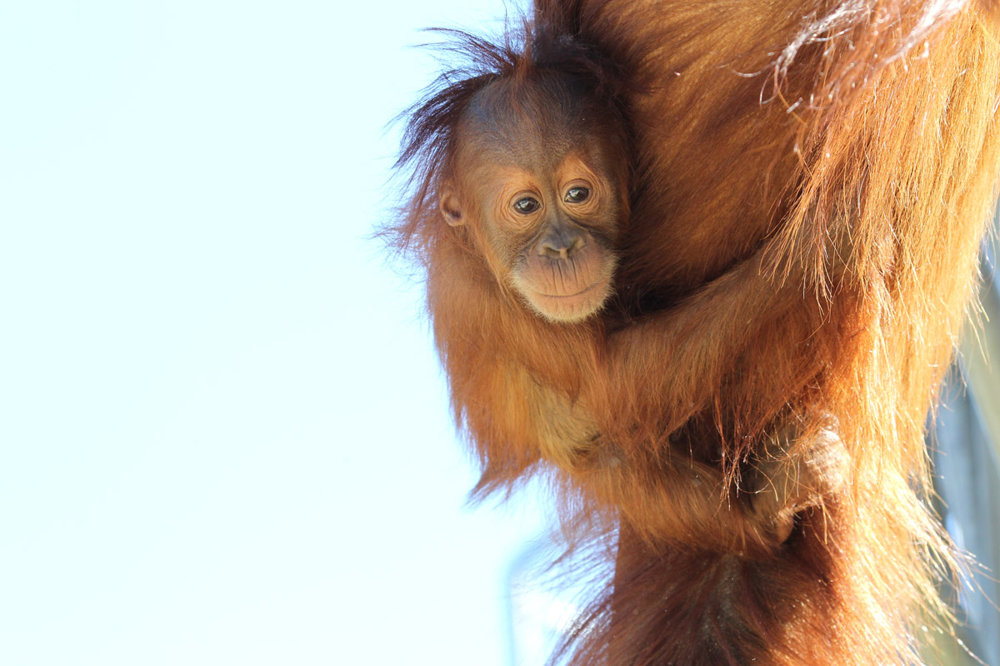
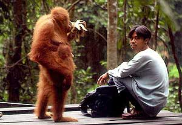
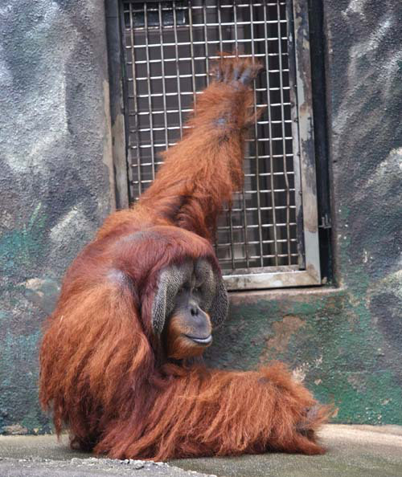

The Sumatran Orangutans are most definitely real .
The Sumatran Orangutan is one of the three species of orangutans. Its only found in North of the Indonesian island of Sumatra, in Southeast Asia . They have thin, long faces and pale red hair. As of 2015, the Sumatran orangutans species only has approximately 7000 remaining members in its population.
 








Two strategies that are recently being considered to conserve this species are 1) rehabilitation and reintroduction of ex-captive or displaced individuals and 2) the protection of their forest habitat by preventing threats such as deforestation and hunting. The former was determined to be more cost efficient for maintaining the wild orangutan populations, but comes with longer time scale of 10–20 years. The latter approach has better prospects for ensuring long-term stability of populations.[25] This type of habitat conservation approach has been pursued by the World Wide Fund for Nature, who joined forces with several other organizations to stop the clearing of the biggest part of remaining natural forest close to the Bukit Tigapuluh National Park. In addition to the above extant wild populations, a new population is being established in the Bukit Tigapuluh National Park (Jambi and Riau Provinces) via the re-introduction of confiscated illegal pets. This population currently numbers around 70 individuals and is reproducing.However it has been concluded that forest conservation costs twelve times less than reintroducing orangutans into the wild, and conserves more biological diversity.
Orangutans have large home ranges and low population densities, which complicates conservation efforts. Population densities depend to a large degree on the abundance of fruits with soft pulp. Sumatran orangutan will commute seasonally between lowland, intermediate, and highland regions, following fruit availability. Undisturbed forests with broader altitudinal range can thus sustain larger orangutan populations; conversely, the fragmentation and extensive clearance of forest ranges breaks up this seasonal movement. Sumatra currently has one of the highest deforestation rates in the world